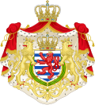
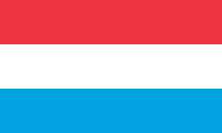
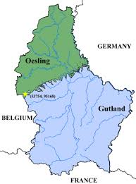
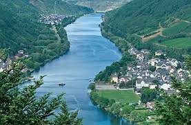
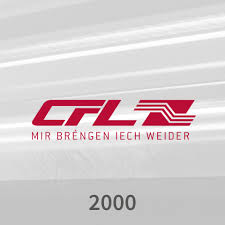
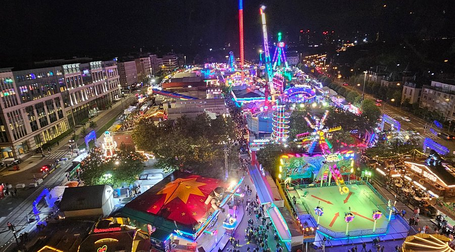
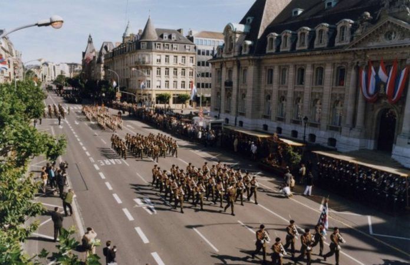
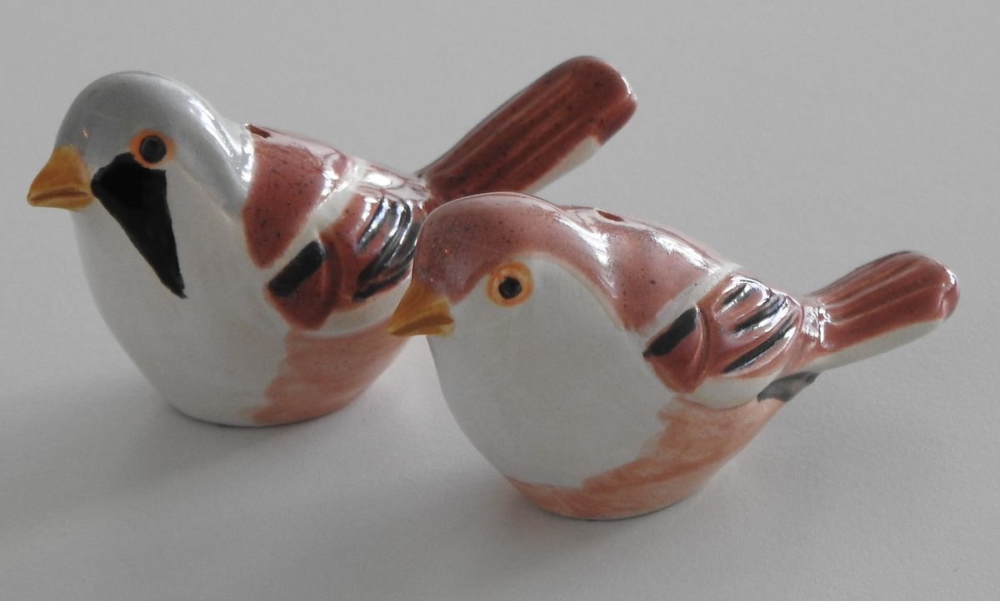
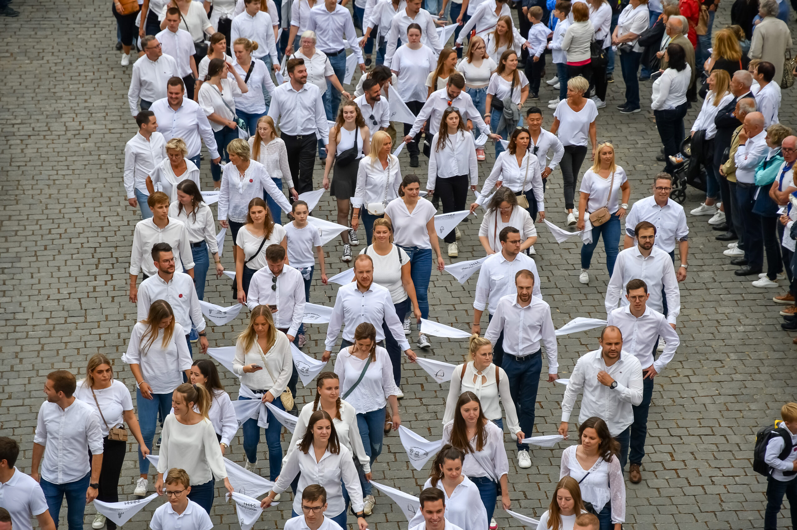

Einige Daten:
- Fläche: 2586,4 km2
- Amtssprachen: Luxemburgisch, Französisch und Deutsch
- Hauptstadt: Luxemburg
- Einwohnerzahl: 681'973 (stand: 1. Januar 2025) davon 47,0% Ausländer
- Währung: €uro
- Nationalfeiertag: 23. Juni

Einleitung
Klein, aber oho — Luxemburg beweist, dass Größe nicht alles ist. Eingekesselt zwischen Deutschland, Frankreich und Belgien, ist das Großherzogtum nicht nur das letzte seiner Art weltweit, sondern auch eines der wohlhabendsten und vielfältigsten Länder Europas.
Auf gerade einmal 2.586 km² treffen drei Amtssprachen aufeinander, leben Menschen aus über 170 Nationen zusammen und befinden sich einige der wichtigsten Institutionen der Europäischen Union — deren Mitgründer Luxemburg ist. Selbst das berühmte Schengen-Abkommen, das Millionen Europäern das Reisen ohne Grenzkontrollen ermöglicht, wurde in einem kleinen luxemburgischen Dorf an der Mosel unterzeichnet.
An der Spitze des Landes steht seit dem 03. Oktober 2025 Guillaume V von Luxemburg (deutsch: Wilhelm V von Luxemburg), der die Nachfolge seines Vaters Henry von Luxemburg (deutsch: Heinrich von Luxemburg) antrat. Als Großherzog ist er Staatsoberhaupt einer konstitutionellen Monarchie, in der Tradition und Moderne auf faszinierende Weise verschmelzen.
Doch was macht dieses kleine Land so besonders? Von einer über tausendjährigen Geschichte über atemberaubende Landschaften bis hin zu einer einzigartigen Sprachkultur — Luxemburg hat weit mehr zu bieten, als man auf den ersten Blick vermuten würde.
Geographie
Luxemburg gliedert sich in zwei große Landschaftsregionen: Das Ösling im Norden und das Gutland im Süden. Das Ösling ist Teil des Ardennenmassivs und besteht aus bewaldeten Hochflächen mit tief eingeschnittenen Tälern. Hier befindet sich mit 560 Metern Höhe bei Wilwerdange auch der höchste Punkt des Landes. Das Gutland, was übersetzt "gutes Land" bedeutet, nimmt etwa 68% der Landesfläche ein. Es ist flacher und fruchtbarer und hier lebt auch der Großteil der Bevölkerung, einschließlich der Hauptstadt.
Die wichtigsten Flüsse Luxemburgs sind die Mosel, die Sauer, die Our und die Alzette. Die Mosel bildet im Südosten die natürliche Grenze zu Deutschland und ist bekannt für die Weinberge an ihren Hängen, an denen seit der Römerzeit Wein angebaut wird. Die Sauer ist mit 173 Kilometern der längste Fluss des Landes. An ihr befindet sich auch der Obersauer-Stausee, die größte Wasserfläche Luxemburgs. Die Alzette durchfließt die Hauptstadt Luxemburg und hat sich zusammen mit der Pétrusse über Jahrhunderte tiefe Täler in den Fels gegraben. Auf dem Bockfelsen über dem Alzettetal wurde einst die Burg errichtet, aus der die Stadt Luxemburg entstand.
Besonders reizvoll ist die Region Müllerthal im Osten, die auch "Kleine Luxemburger Schweiz" genannt wird. Hier findet man bizarre Sandsteinfelsen, enge Schluchten und malerische Wanderwege. Im Süden des Landes liegt die Region Minett, benannt nach dem französischen Wort "Minette" für Eisenerz. Die Eisenerzförderung in dieser Region hat im 19. Jahrhundert maßgeblich zum Wohlstand des Landes beigetragen. Heute sind die ehemaligen Industrieflächen in Naturschutzgebiete oder Wohngebiete umgewandelt worden.
Das Klima in Luxemburg ist gemäßigt mitteleuropäisch mit milden Wintern und angenehmen Sommern. Die Durchschnittstemperatur liegt bei etwa 9 Grad Celsius im Jahr. Im Norden, im Ösling, ist es etwas kühler und es regnet häufiger als im Süden.

Das Müllerthal im Osten Luxemburgs wird auch "Kleine Luxemburger Schweiz" genannt. Die Region ist bekannt für ihre bizarren Sandsteinfelsen, engen Schluchten und malerischen Wanderwege.

Luxemburg gliedert sich in zwei Landschaftsregionen: Das Ösling im Norden ist Teil des Ardennenmassivs mit bewaldeten Hochflächen. Das Gutland im Süden — übersetzt "gutes Land" — nimmt 68% der Landesfläche ein und ist flacher und fruchtbarer.

Die Mosel bildet im Südosten die natürliche Grenze zu Deutschland. An ihren Hängen wird seit der Römerzeit Wein angebaut. Die Region ist berühmt für ihre Weinberge und malerischen Dörfer.
Infrastruktur
Für ein Land seiner Größe verfügt Luxemburg über eine bemerkenswert moderne und gut ausgebaute Infrastruktur. Sechs Autobahnen mit einer Gesamtlänge von rund 161 Kilometern bilden zusammen mit dem etwa 2.900 Kilometer langen Nationalstraßennetz das Rückgrat des Verkehrs — komplett mautfrei für PKW. Täglich pendeln rund 200.000 Grenzgänger aus Deutschland, Frankreich und Belgien nach Luxemburg zur Arbeit, was das Land zu einem der größten Pendlermagneten Europas macht.
Seit dem 1. März 2020 schreibt Luxemburg Weltgeschichte: Als erstes Land der Welt hat es den gesamten öffentlichen Nahverkehr kostenlos gemacht. Busse, Straßenbahnen und Züge der zweiten Klasse können seitdem von jedermann gratis genutzt werden — ob Einwohner oder Tourist. Diese mutige Entscheidung soll den Autoverkehr reduzieren, die Umwelt schützen und die Lebensqualität im Land steigern.
Das Herzstück des öffentlichen Nahverkehrs in der Hauptstadt bildet die moderne Straßenbahn "Luxtram". Seit ihrer Eröffnung im Dezember 2017 wurde die Linie schrittweise ausgebaut — seit März 2025 verbindet sie auf 16 Kilometern mit 24 Haltestellen das Stade de Luxembourg mit dem Flughafen Findel. Doch das Netz wächst weiter: Bis 2027 soll ein neuer Streckenast zur Europaschule auf dem Kirchberg entstehen, und eine geplante Schnelltramverbindung soll bis 2035 die Hauptstadt mit Esch-sur-Alzette im Süden verbinden. Ergänzt wird die Tram durch das 271 Kilometer lange Schienennetz der nationalen Eisenbahngesellschaft CFL, die das Land sternförmig durchzieht und auch die Nachbarländer anbindet. Der Flughafen Luxemburg-Findel, nur wenige Kilometer vom Stadtzentrum entfernt, bietet zudem zahlreiche internationale Verbindungen.
Auch digital ist Luxemburg Vorreiter: Das Land verfügt über eines der schnellsten Glasfasernetze Europas und beherbergt zahlreiche Rechenzentren internationaler Unternehmen. Diese Kombination aus physischer und digitaler Infrastruktur macht Luxemburg zu einem der attraktivsten Wirtschaftsstandorte des Kontinents.

Die Société Nationale des Chemins de Fer Luxembourgeois (CFL) ist die staatliche Eisenbahngesellschaft Luxemburgs. Ihr Motto "Mir bréngen Iech weider" (deutsch: Wir bringen euch weiter) spiegelt ihren Auftrag wider: Mit einem 271 km langen Schienennetz verbindet sie das Land sternförmig und bietet seit 2020 kostenlosen Nahverkehr für alle.
Luxair ist die nationale Fluggesellschaft Luxemburgs mit Sitz am Flughafen Findel. Sie wurde 1961 gegründet und bietet Flüge zu zahlreichen europäischen Zielen an. Mit ihrer Tochtergesellschaft LuxairTours ist sie zudem einer der größten Reiseveranstalter der Großregion.
Luxtram betreibt die moderne Straßenbahn der Stadt Luxemburg. Seit März 2025 verbindet die erste Linie auf 16 Kilometern mit 24 Haltestellen das Stade de Luxembourg mit dem Flughafen Findel. Das Netz wird stetig ausgebaut — bis 2035 soll auch eine Schnelltramverbindung nach Esch-sur-Alzette entstehen.
Wirtschaft & Finanzen
Luxemburg zählt gemessen am Bruttoinlandsprodukt pro Kopf zu den reichsten Ländern der Welt. Doch dieser Wohlstand war keineswegs immer selbstverständlich — er ist das Ergebnis eines bemerkenswerten wirtschaftlichen Wandels, der das Land innerhalb weniger Jahrzehnte von einer Industrienation zu einem der führenden Finanzplätze der Welt machte.
Bis in die 1970er-Jahre war die Stahlindustrie das wirtschaftliche Rückgrat Luxemburgs. Der Konzern ARBED, gegründet 1911, war zeitweise einer der größten Stahlproduzenten der Welt. Die Eisenerzvorkommen in der Region Minett im Süden des Landes hatten diese Entwicklung im 19. Jahrhundert angestoßen. Doch die weltweite Stahlkrise traf Luxemburg hart: Tausende Arbeitsplätze gingen verloren und das Land stand vor der Frage, wie es seine Wirtschaft neu ausrichten konnte. Aus ARBED wurde durch Fusionen schließlich der Konzern ArcelorMittal, der bis heute seinen Hauptsitz in Luxemburg hat und der größte Stahlproduzent der Welt ist.
Die Antwort auf die Stahlkrise war ein konsequenter Ausbau des Finanzsektors. Bereits in den 1960er-Jahren hatte Luxemburg begonnen, sich mit günstigen Steuergesetzen und einem liberalen Bankgeheimnis als Finanzstandort zu positionieren. Heute sind rund 120 Banken aus aller Welt in Luxemburg ansässig. Das Land ist nach den USA der zweitgrößte Investmentfondsstandort der Welt und der größte in Europa. Der Finanzsektor erwirtschaftet etwa ein Viertel des Bruttoinlandsprodukts und beschäftigt rund 50.000 Menschen — viele davon Grenzgänger aus den Nachbarländern.
Neben dem Finanzsektor setzt Luxemburg zunehmend auf Zukunftsbranchen. Das Land hat sich als Standort für Informationstechnologie und Cybersicherheit etabliert und beherbergt zahlreiche Rechenzentren internationaler Konzerne. Besonders ambitioniert ist Luxemburgs Engagement in der Raumfahrt: Mit der Initiative SpaceResources.lu war das Großherzogtum 2016 das erste europäische Land, das einen rechtlichen Rahmen für den Abbau von Rohstoffen im Weltraum schuf. Die Europäische Investitionsbank, die als Finanzierungsinstitution der EU Projekte in ganz Europa fördert, hat ebenfalls ihren Sitz in Luxemburg.
Eine Besonderheit der luxemburgischen Wirtschaft ist ihre extreme Abhängigkeit von ausländischen Arbeitskräften. Täglich pendeln rund 200.000 Grenzgänger aus Frankreich, Deutschland und Belgien ins Land. Zusammen mit den ansässigen Ausländern stellen sie die Mehrheit der Arbeitskräfte. Der gesetzliche Mindestlohn liegt bei über 2.500 Euro brutto im Monat — einer der höchsten weltweit. Gleichzeitig gehören die Lebenshaltungskosten, insbesondere die Immobilienpreise, zu den höchsten in Europa.
Geschichte
Die Geschichte Luxemburgs beginnt im Jahr 963, als Graf Siegfried von den Ardennen durch einen Tausch mit der Abtei Sankt Maximin in Trier eine kleine Burg auf dem Bockfelsen erwarb. Diese Burg trug den Namen "Lucilinburhuc", was so viel wie "kleine Burg" bedeutet. Aus diesem Namen entwickelte sich im Laufe der Zeit der Name "Luxemburg". Was folgte, war eine über tausendjährige Geschichte zwischen Aufstieg und Fremdherrschaft, Teilung und Unabhängigkeit.
Von der kleinen Burg auf dem Bockfelsen bis zum modernen Großherzogtum — Luxemburgs Geschichte ist geprägt von einem erstaunlichen Überlebenswillen. Trotz jahrhundertelanger Fremdherrschaft, zweier Weltkriege und der Teilung des Landes haben die Luxemburger ihre Identität bewahrt. Heute ist die Stadt Luxemburg Sitz des Europäischen Gerichtshofs, des Europäischen Rechnungshofs und mehrerer weiterer EU-Institutionen — ein kleines Land mit großer Bedeutung.
Sprachen
Luxemburg ist ein wahrhaft mehrsprachiges Land, was vor allem auf seine Geschichte und seine Lage im Herzen Europas zurückzuführen ist. Die Mehrsprachigkeit ist fest im Alltag verankert und wird bereits in der Schule systematisch aufgebaut.
Luxemburgisch, oder "Lëtzebuergesch", ist die Nationalsprache und Muttersprache der meisten Einheimischen. Es ist ein westmitteldeutscher Dialekt, der mit dem Moselfränkischen verwandt ist und Einflüsse aus dem Französischen aufgenommen hat. Erst seit 1984 ist Luxemburgisch per Gesetz als Nationalsprache anerkannt. Im Alltag wird es vor allem mündlich verwendet — in Gesprächen unter Freunden, in der Familie und zunehmend auch in sozialen Medien.
Französisch ist die wichtigste Schriftsprache des Landes. Sämtliche Gesetzestexte werden ausschließlich in Französisch verfasst. In der Verwaltung, im Geschäftsleben und in der Regierung dominiert Französisch. Offizielle Briefe und Behördenkorrespondenz sind überwiegend auf Französisch. Kinder lernen Französisch ab der zweiten Klasse in der Grundschule. Im Laufe ihrer Schulzeit wechselt die Unterrichtssprache in vielen Fächern nach und nach von Deutsch zu Französisch.
Deutsch spielt vor allem im Bildungssystem und in den Medien eine wichtige Rolle. In der Grundschule ist Deutsch die erste Alphabetisierungssprache — Kinder lernen ab der ersten Klasse lesen und schreiben auf Deutsch. Auch viele Zeitungen und Teile der Medienlandschaft sind deutschsprachig. Im Alltag wird Deutsch besonders in den Grenzregionen zu Deutschland gesprochen, etwa in Wasserbillig, Echternach oder Remich.
Englisch gewinnt zunehmend an Bedeutung, besonders im internationalen Geschäftsleben und im Finanzsektor. Es wird ab der fünften Klasse in der Schule unterrichtet. Da Luxemburg viele internationale Unternehmen und EU-Institutionen beherbergt, ist Englisch im beruflichen Umfeld weit verbreitet.
Portugiesisch ist die meistgesprochene Sprache unter den ausländischen Einwohnern. Die portugiesische Gemeinschaft ist mit etwa 15% der Gesamtbevölkerung die größte ausländische Bevölkerungsgruppe in Luxemburg. Die Einwanderung aus Portugal begann in den 1960er-Jahren, als Arbeitskräfte für die Stahlindustrie gesucht wurden. Italienisch hat eine ähnliche Geschichte — viele Italiener kamen ebenfalls als Arbeitsmigranten nach Luxemburg.
Insgesamt leben in Luxemburg Menschen aus über 170 Nationen. Fast die Hälfte der Bevölkerung besitzt nicht die luxemburgische Staatsangehörigkeit. Man sagt scherzhaft, dass die Luxemburger "lëtzebuergesch denken, französisch sprechen und deutsch rechnen".
Die Nationalhymne Luxemburgs — "Ons Heemecht" (Unsere Heimat) — wurde 1864 von Michel Lentz verfasst und ist ein eindrucksvolles Beispiel für die luxemburgische Sprachkultur. Der Originaltext ist auf Luxemburgisch, existiert aber auch in einer deutschen Fassung.
Kultur & Feiertage
Luxemburg pflegt eine lebendige Festkultur, in der sich jahrhundertealte Traditionen mit moderner Lebensfreude verbinden. Viele Bräuche haben ihren Ursprung im Mittelalter und werden bis heute mit Begeisterung gefeiert. Ob riesige Kirmes, springende Prozessionen oder brennende Winterfeuer — die Luxemburger verstehen es, ihre Traditionen lebendig zu halten.

Schueberfouer
Luxemburgs größte Kirmes
Die Schueberfouer findet seit 1340 jeden Sommer auf dem
Glacis-Feld in Luxemburg-Stadt statt. Über drei Wochen
lang verwandelt sich die Fläche in einen riesigen Rummelplatz
mit Fahrgeschäften, Imbissbuden und Marktständen. Sie ist
eine der ältesten und größten Kirmesveranstaltungen Europas
und zieht jährlich über zwei Millionen Besucher an.

Nationalfeierdag
23. Juni
Der luxemburgische Nationalfeiertag wird jedes Jahr am
23. Juni gefeiert — dem offiziellen Geburtstag des
Großherzogs, unabhängig von seinem tatsächlichen
Geburtsdatum. Am Vorabend verwandelt sich die Hauptstadt
in eine große Partymeile mit Livemusik, Straßenfesten
und einem spektakulären Feuerwerk. Am Feiertag selbst
finden eine Militärparade und ein feierlicher
Te-Deum-Gottesdienst in der Kathedrale statt.

Éimaischen
Der Ostermarkt
Am Ostermontag findet in Luxemburg-Stadt und in
Nospelt der traditionelle Éimaischen-Markt statt.
Das Herzstück sind die Péckvillercher — kleine
Vogelflöten aus Ton, die seit Jahrhunderten von Hand
gefertigt werden. Ursprünglich tauschten junge Paare
diese Tonvögel als Zeichen der Zuneigung. Heute ist
der Markt ein buntes Volksfest mit Kunsthandwerk,
Musik und Leckereien.

Buergbrennen
Den Winter vertreiben
Am ersten Sonntag der Fastenzeit lodern in ganz
Luxemburg große Feuer auf — das Buergbrennen. Mit
diesem Brauch wird symbolisch der Winter vertrieben
und der Frühling begrüßt. Ganze Dorfgemeinschaften
kommen zusammen, um das Feuer zu entzünden. Oft wird
dabei ein Strohkreuz verbrannt. Dazu gibt es
Glühwein, Erbsensuppe und geselliges Beisammensein
in der Kälte.

Sprangprozessioun
UNESCO-Weltkulturerbe
Jeden Pfingstdienstag findet in Echternach die
weltberühmte Springprozession statt. Tausende
Teilnehmer springen in Reihen durch die Straßen
der Altstadt bis zur Basilika — begleitet von
einer traditionellen Polka-Melodie. Die Prozession
zu Ehren des Heiligen Willibrord ist einzigartig
in Europa und wurde 2010 von der UNESCO zum
immateriellen Kulturerbe der Menschheit erklärt.
Kulinarik
Die luxemburgische Küche ist ein Spiegelbild der Lage des Landes: Einflüsse aus Frankreich, Deutschland und Belgien verbinden sich mit bodenständigen bäuerlichen Traditionen zu einer einzigartigen Mischung. Herzhafte Eintöpfe, geräuchertes Fleisch und Kartoffelgerichte stehen ebenso auf dem Speiseplan wie feine Patisserie und preisgekrönte Moselweine. Seit den 1960er-Jahren bereichern zudem portugiesische und italienische Einwanderer die kulinarische Landschaft. Luxemburg hat nicht nur ein Nationalgericht, sondern gleich mehrere — hier sind die wichtigsten.
Sehenswürdigkeiten
Trotz seiner geringen Größe bietet Luxemburg eine beeindruckende Vielfalt an Sehenswürdigkeiten. Mittelalterliche Burgen, unterirdische Festungsanlagen und prachtvolle Sakralbauten zeugen von einer über tausendjährigen Geschichte. Viele dieser Orte gehören zum UNESCO-Weltkulturerbe und ziehen jährlich hunderttausende Besucher aus aller Welt an.